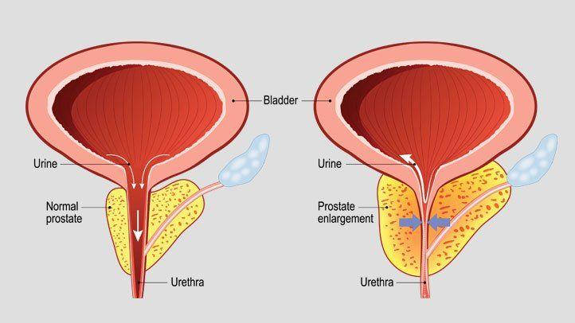

Benign Prostatic Hyperplasia (BPH)

SYMPTOMS
Since the prostate gland surrounds the urethra (the tube that carries urine outside the body), it is easy to understand that enlargement of the prostate can lead to blockage of the tube. Therefore, you may develop early symptoms of BPH:
- Slowness or dribbling of your urinary stream.
-
Hesitancy or difficulty starting to urinate.
Frequent urination.
-
Feeling of urgency (sudden need to urinate).
Need to get up at night to urinate.
-
Pain after ejaculation or while urinating.
-
Urine that looks or smells "funny" (for instance, it's a different color).
DIAGNOSIS
Several studies may be performed to help diagnose your condition:
- A survey to evaluate how severe your symptoms are.
-
A flow study may be conducted to measure how slow the urinary stream is compared with normal urine flow.
-
A study to detect how much urine is left in the bladder after you finish urinating.
-
A cystoscopy to look into the bladder.
TREATMENTS
Patients who have mild symptoms may not require treatment other than continued observation to make sure their condition doesn't get worse. This approach is sometimes called "watchful waiting" or surveillance. There are a number of treatment options available if your symptoms are severe.